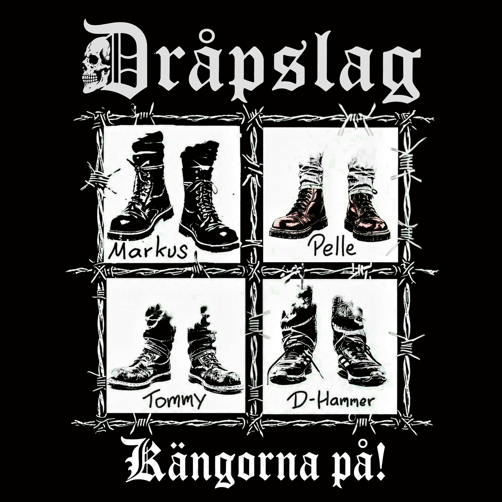

Vorab gehört
DRÅPSLAG - Krigets hundar

Hinweis: Krigets hundar erscheint offiziell am 25. September 2026. Der Song wurde RandaleFUNK vorab zur Verfügung gestellt.
Oh Mann, ich stehe ja total auf skandinavische Bands, die in ihrer Muttersprache singen. Man versteht zwar nix, aber es klingt natürlich immer extravagant.
Mir liegt hier der Song „Krigets hundar“ – zu Deutsch: „Hunde des Krieges“ – der schwedischen Oi!-Punkband DRÅPSLAG vor. Der Bandname lässt sich sinngemäß mit „tödlicher Schlag“ übersetzen.
Das militärisch wirkende Trommelwirbelintro lässt die Songthematik schon erahnen. Noch bevor ich den Google Übersetzer angeschmissen habe, konnte ich mir anhand des Titels ungefähr denken, was dabei herauskommt.
Die Thematik ist natürlich wieder mehr als allgegenwärtig, und so nahmen sich DRÅPSLAG der Sache an. Für eine Oi!-Punkband kommt der Song eher Hardcore-Punk-lastig rüber, der Oi!-Anteil ist da eher zweitrangig. Dafür knallt „Krigets hundar“ herrlich in eins durch, mit Wechselgesang und eingängigen Singalongs. Dabei kommt alles auch ohne Gitarrensolo aus. Einfach geradeaus. Tut dem Ganzen auch richtig gut.
DRÅPSLAG erfinden das Rad nicht neu, aber es rollt und rollt und rollt.
SKÅL!
„Krigets hundar“ erscheint am 25. September 2026 bei DiSTAT Records.
Note: Krigets hundar will be officially released on September 25, 2026. The song was provided to RandaleFUNK in advance.
Oh man, I absolutely love Scandinavian bands that sing in their native language. I may not understand a word, but it always sounds wonderfully extravagant.
I’m listening to “Krigets hundar” – “Dogs of War” – by the Swedish Oi! punk band DRÅPSLAG. The band name roughly translates as “fatal blow.”
The military-sounding drumroll intro already hints at the song’s subject. Even before I fired up Google Translate, the title gave me a pretty good idea of what it meant.
The subject is, of course, all too present again, so DRÅPSLAG have taken it on. For an Oi! punk band, the song leans more toward hardcore punk, with the Oi! side taking a back seat. In return, “Krigets hundar” pounds straight through with alternating vocals and catchy sing-alongs. It does all of that without a guitar solo, too. Straight ahead. That suits the whole thing just fine.
DRÅPSLAG are not reinventing the wheel, but it rolls and rolls and rolls.
SKÅL!
“Krigets hundar” will be released by DiSTAT Records on September 25, 2026.
Observera: Krigets hundar släpps officiellt den 25 september 2026. RandaleFUNK fick lyssna på låten i förväg.
Åh, jag är ju helt såld på skandinaviska band som sjunger på sitt modersmål. Själv fattar jag visserligen ingenting, men det låter förstås alltid extravagant.
Här har jag låten ”Krigets hundar” av det svenska Oi!-punkbandet DRÅPSLAG. För den som inte kan svenska: titeln betyder ”Dogs of War” och bandnamnet ungefär ”fatal blow”.
Det militäriskt klingande trumvirvelintrot ger redan en aning om låtens tema. Redan innan jag drog igång Google Translate kunde jag utifrån titeln ungefär föreställa mig vad den betydde.
Ämnet är förstås kusligt närvarande igen, och DRÅPSLAG har tagit sig an saken. För att vara ett Oi!-punkband drar låten mer åt hardcorepunk, medan Oi!-delen hamnar lite i bakgrunden. I gengäld dundrar ”Krigets hundar” rakt igenom med växelsång och medryckande allsångspartier. Allt klarar sig dessutom utan gitarrsolo. Bara rakt fram. Det mår hela låten bra av.
DRÅPSLAG återuppfinner inte hjulet, men det rullar och rullar och rullar.
SKÅL!
”Krigets hundar” släpps den 25 september 2026 via DiSTAT Records.